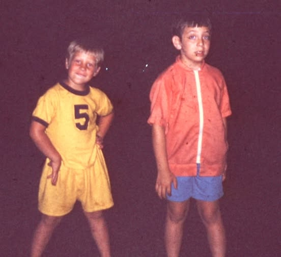

The Blue Chair
There was a recliner in the corner of the den that my father called his office, though as far as any of us could tell, the only business conducted there was arguing with the evening news and falling asleep before Wheel of Fortune finished. It was the color of a swimming pool on a postcard — a blue nobody would have chosen on purpose, which is probably why he loved it. My mother tried to replace it three times over twenty years. Three times it came back from the curb, carried in by my father like a man rescuing a dog from a shelter. The chair had a permanent dent shaped like him — a groove worn into the right armrest where his watch used to click against the wood trim while he read the paper.
He rescued that chair from the curb three times.
When I was young I thought all fathers had a chair like this: a place in the house that was unmistakably theirs, that the rest of us orbited rather than occupied.

He died on a Tuesday in March, and for a long time nobody in the house could sit in that chair. It just sat there, blue and empty and somehow still fully his, the way a coat still holds the shape of the person who wore it last.
It was my mother who finally sat in it, almost a year later, on a Friday evening before the candles were lit. She didn't say anything about it. She just sat down the way you'd sit in any chair, picked up the remote, and watched the news the way he used to — arguing quietly with the anchor under her breath.

Nobody in the family has ever gotten rid of that chair. It's still blue. It's still ugly. The dent in the armrest is still there, a little deeper now, holding two shapes instead of one.
Leave a line in the margin — what did this remind you of?